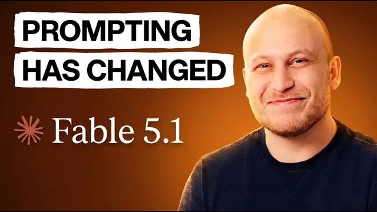

앤트로픽이 공개한 클로드 5 프롬프트 7원칙

원본 영상 보기 →
- "빨리 프롬프트 넣고 고치기"에서 "사전 계획에 시간 쓰기"로
- 금지어 목록보다 이유가 붙은 지침이 더 잘 먹혀요
- 예전에 배운 기법 중 일부는 이제 손해예요
Anthropic Just Revealed 7 New Rules for Prompting Claude 5 Models
채널: Ben AI 게시일: 2026-09-02 원본: https://www.youtube.com/watch?v=HDmBwU5uvEE
한 줄 요약
Anthropic의 새 프롬프팅 가이드와 기조연설을 근거로, Claude Opus 5·Fable 5 같은 최신 모델은 예전 모델과 근본적으로 다르게 작동하니 프롬프트 작성법도 바꿔야 한다는 내용이에요. 단계별 지시를 버리고 전체 작업을 한 번에 맡기기, 사전 계획에 시간 쓰기, '왜'와 '완료 기준' 명시하기, 강압적 금지 대신 이유 달기, 불필요한 이중 검증 빼기, 모델 말투 교정 규칙 두기까지. 7가지 규칙을 실제 예시와 함께 보여줍니다.
전체 내용 정리
왜 프롬프팅 방식을 바꿔야 할까요
발표자 Ben은 세 번의 창업 경험이 있고, AI 에이전시와 비기술직 전문가·사업가 대상 AI 커뮤니티를 운영하고 있어요.
그는 Anthropic의 새 프롬프팅 가이드와 기조연설을 살펴본 결과, Claude Opus 5나 Fable 5 같은 최신 모델은 이전 모델과 작동 방식이 근본적으로 달라서 대부분의 사람이 잘못된 방식으로 프롬프트를 쓰고 있다고 말합니다.
이 영상은 Anthropic 팀이 실제로 쓰는, Claude 5 모델의 성능을 끌어올리고 토큰 낭비를 막는 7가지 규칙을 다뤄요.
규칙 1 — 단계별로 쪼개지 말고 전체 작업을 한 번에 맡기세요
Anthropic의 Opus 5·Fable 5 프롬프팅 모범 사례 가이드는 이렇게 명시합니다. 이 모델들은 복잡한 작업이라도 처음부터 전체 과업 명세를 받고 스스로 실행하게 뒀을 때 최고 성능을 낸다고요. 엔드투엔드 작업을 하도록 특별히 훈련됐기 때문이에요.
Boris Cherny도 Y Combinator 기조연설에서 같은 점을 지적했어요. 그가 말한 흔한 실수가 "첫째, 둘째, 셋째 순서대로 반드시 해"라며 지나치게 상세한 지침을 주는 겁니다.
최신 모델에는 더 높은 수준에서 접근해야 해요. 작업 내용을 설명하고, 가드레일을 설정하고, 종료 조건을 명시한 뒤 모델이 스스로 처리하게 맡기고 잠시 기다리는 거죠. 6개월 전에는 통하지 않았을 방식이지만 지금은 효과가 있다고 합니다.
정리하면 프롬프트에 네 가지를 담으면 돼요. (1) 수행할 전체 작업 (2) 이 작업을 하는 이유 (3) 가드레일 (4) 작업이 완료된 상태가 무엇인지. 이 프레임워크를 매번 따르는 것이 가장 쉬운 개선법입니다.
Ben은 이 영상 개요를 잡을 때도 이 프레임워크를 썼어요. Claude 5에 포괄적 목표·이유·가이드라인·결과물 형태를 주고 10~15분 들여 사전 개요를 완성했다고요.
다만 이렇게까지 할 필요 없는 간단한 작업에는 이런 고성능 모델을 안 쓰거나, 최소한의 노력만 들이는 게 낫습니다.
규칙 2 — 사양이 100% 명확하지 않으면 'Interview Me' 스킬로 먼저 파악하세요
복잡한 작업을 맡길 때는 모든 가이드라인·규칙·세부 요소를 사전에 다 떠올리기 어렵잖아요.
Anthropic 내부에서는 강력한 모델에게 복잡한 작업을 맡기기 전에 'Interview Me' 스킬을 씁니다. 이 스킬은 작업에 대한 질문을 먼저 던져 맥락을 파악한 뒤, 모델에 그대로 입력할 수 있는 브리핑(전체 프롬프트)을 생성해줘요. 즉 알 수 없는 부분을 찾아내 수면 위로 끌어올리도록 설계된 거죠.
Ben은 개인 분석 대시보드 구축 계획을 세울 때, 자기가 정확히 뭘 원하는지 확신이 안 서서 이 스킬을 썼다고 해요. 모델이 몇 가지 질문을 한 뒤 업무 내용·목적·제약·완료 기준이 정의된 브리핑을 완성해줬다고 합니다.
핵심은 빠르게 프롬프트를 넣고 결과물을 계속 고치는 대신, 사전 계획에 더 많은 노력을 기울이는 거예요. 이 사고 전환이 더 나은 결과를 낼 뿐 아니라 무한 반복이 없어 토큰과 시간도 아껴줍니다.
사전 계획의 또 다른 방법도 있어요. Andrej Karpathy가 권하는 방식인데, 음성 녹음 도구를 켜고 업무에 대해 몇 분간 자유롭게 말하는 겁니다. Ben은 Whisper Flow를 쓰지만 Claude에도 내장 음성 도구가 있죠. 음성은 훨씬 더 많은 맥락을 훨씬 빠르게 전달해요.
다만 말이 두서없이 엉키면 모델에도 좋지 않습니다. 그래서 Ben은 직접 만든 '프롬프트 마스터' 스킬로 두서없는 이야기를 정리·구조화한 뒤 Claude 5에 붙여넣는다고 해요.
규칙 3 — '무엇을'뿐 아니라 '왜' 이 작업을 하는지 알려주세요
Anthropic 가이드는 특히 복잡한 작업에서 모델이 요청의 의도를 이해할 때 더 나은 성능을 보인다고 명시해요.
왜 그럴까요. 복잡한 작업에서는 인터뷰로 미리 계획을 세웠더라도, 모델이 사전에 지정되지 않은 결정을 내려야 하는 상황이 늘 생기거든요. 전체 맥락과 이유를 알면 그런 사소한 결정을 더 나은 배경 지식으로 내릴 수 있습니다.
Anthropic이 제공하는 템플릿은 기본적으로 "나는 누구를 위해 이 큰 작업을 하고 있고, 그 결과물이 무엇을 가능하게 해야 한다"는 내용을 담아요.
Ben은 같은 프롬프트에서 이렇게 설명했다고 합니다. "나는 Claude 프롬프팅 방법과 그 변화에 대한 유튜브 영상을 만들고 있다. 이 영상은 Claude로 업무를 자동화하려는 비기술직 전문가·사업가를 위한 것이고, 이론뿐 아니라 실질적인 팁·예시·프레임워크가 필요하다."
처음엔 과해 보여도 출력 품질이 확실히 올라간다고 해요. 사람에게 일을 위임할 때도 무엇을 하라고만 하는 것보다, 왜 이 일이 중요한지까지 설명하는 편이 더 효율적인 것과 같은 원리죠.
규칙 4 — '완료'의 기준을 정의하세요
Claude 5 모델은 장시간 실행되므로 작업을 너무 적게 하기보다 너무 많이 하는 경향이 있어요. 종료 조건을 정의하지 않으면 모델이 너무 오래 답변을 이어가며 토큰을 낭비합니다. Boris도 YC 강연에서 이 점을 특별히 언급했죠.
두 측면이 있어요. (1) 작업 완료의 기준 정의 (2) 출력 스타일 정의.
Ben은 영상 사전 개요를 시킬 때 이렇게 했어요. "Claude 프롬프팅 방법에 대한 8~15가지 실용적 팁과 각각의 구체적 예시, 그리고 그 팁을 찾은 출처를 포함하되 출처는 Anthropic이 뒷받침하는 것이어야 한다." 그리고 "내 세컨드 브레인에서 영상 개요의 출력 스타일 예시를 찾을 수 있다"고 덧붙였습니다.
Opus 5의 흔한 문제가 장황해지는 것이니, "이해하기 쉬운 평이한 언어로 출력해"처럼 간단히 지시하면 돼요.
예시가 더 이상 필요 없다는 사람도 있지만, Ben은 특정 출력 스타일을 얻는 데는 예시가 확실히 도움이 된다고 봅니다.
규칙 5 — 강압적 금지 대신 이유를 제시하세요
많은 사람이 "절대 하지 마라", "이것을 피하라" 같은 표현을 쓰도록 훈련받았잖아요.
하지만 Anthropic의 새 컨텍스트 엔지니어링 연구와 프롬프팅 기조연설에 따르면, 최신 지능형 모델은 이유가 포함된 지침에 훨씬 더 잘 반응한다고 해요. 가이드라인 정의는 여전히 중요하지만, 무엇을 하지 말라고만 하기보다 항상 그 지침의 이유를 덧붙이는 게 고지능 모델에는 훨씬 효과적입니다.
예를 들어 "Anthropic이 뒷받침하지 않는 포인트는 절대 주지 마라" 대신, "언급된 포인트들이 Anthropic 팀에 의해 뒷받침되는지 확인하라"고 말하는 거예요. 그래야 주장에 대한 증거와 그 이면의 이유를 갖게 되죠.
규칙 6 — 결과물을 이중으로 검증하게 시키지 마세요
이 원칙은 Claude.md와 스킬 파일에도 적용돼요. Anthropic이 새 모델의 모범 사례에 맞춰 엄격한 규칙들을 바꿔주는 'rule rewriter'(규칙 재작성) 스킬을 낸 이유가 이것입니다. Ben이 자기 LinkedIn 작문 스킬에 적용해보니 엄격한 규칙 몇 개가 실질적 이유가 뒷받침된 지침으로 바뀌었다고 해요.
모델에게 결과물을 검증하게 하거나, 하위 에이전트로 최종 답변 전에 이중 확인시키는 건 실수·환각을 줄이는 인기 기법이었죠. 그런데 Opus 5나 Fable 5는 스스로 실수를 확인·검증·수정하도록 특별히 훈련됐습니다. 따라서 이를 구체적으로 지시하는 건 불필요한 검증 단계를 더해 결과 개선 없이 비용만 높여요.
Anthropic이 최신 모델에서 피하라고 권하는 다른 인기 기법도 있어요. "단계별로 생각하라", "추론 과정을 설명하라", 대문자로 공격적으로 강조하기 같은 것들입니다(과도한 반응을 유발할 수 있다고 하네요).
규칙 7 — Claude의 말투를 한 번 교정하는 규칙을 두세요
특히 Opus 5를 쓰면서 모델이 전문 용어를 너무 많이 쓰고 장황해져 읽기 어려워지는 문제를 많이 겪어요.
Anthropic은 이를 해결하기 위해 Claude.md 파일이나 Claude 데스크톱의 전체 설정 지침, 또는 시스템 프롬프트에 간단한 프롬프트를 넣을 것을 권합니다. 가이드에 예시가 있지만 원하는 출력 스타일에 맞춰 맞춤 설정할 수 있어요.
Claude 데스크톱에서는 설정의 일반 메뉴 → "Claude를 위한 지침"에 원하는 출력 스타일을 입력하면 됩니다. Ben은 응답을 집중적이고 간결하게 유지하며, 전문 용어나 지나치게 장황한 표현을 피하도록 설정했다고 해요.
관통하는 원리 — 사람에게 지시하듯 하세요
이 모든 규칙은 결국 하나로 귀결돼요. 최신 모델에 대한 사고방식을, 사람에게 지시하는 것에 가깝게 바꾸는 겁니다.
무엇을 하라고만 하는 것으로는 부족하고, 왜 해야 하는지 설명하면 더 잘 처리해요. Anthropic은 Claude를 "업무 방식이나 상황을 잘 모르는 아주 똑똑한 신입 사원"이라고 생각하라고 설명합니다.
가장 좋은 점검법이 있어요. 프롬프트를 그 업무를 잘 모르는 동료에게 보여주고 그대로 따라 해보라고 하는 거예요. 동료가 헷갈려 하면 Claude도 똑같이 헷갈립니다.
핵심 인사이트
- "빨리 프롬프트 넣고 고치기"에서 "사전 계획에 시간 쓰기"로: 더 똑똑한 모델일수록 초기 프롬프트와 계획을 다듬는 데 10~15분을 투자하는 편이, 어중간한 프롬프트로 시작해 무한 반복하는 것보다 결과도 좋고 토큰·시간도 아낍니다.
- 금지어 목록보다 이유가 붙은 지침이 더 잘 먹혀요: "절대 하지 마라"를 "~인지 확인하라"로 바꾸는 작은 습관이 고지능 모델의 순응도를 높입니다. 기존 Claude.md·스킬 파일의 엄격한 규칙들은 이유가 붙은 지침으로 다시 쓸 가치가 있어요.
- 예전에 배운 기법 중 일부는 이제 손해예요: "단계별로 생각하라", 결과물 이중 검증 지시, 대문자 강조는 Opus 5/Fable 5에서는 개선 없이 비용만 늘리거나 과잉 반응을 부릅니다. 모델이 바뀌면 프롬프트 습관도 점검해야 하죠.
오늘 당장 해볼 것
- 자주 시키는 작업 하나를 골라 프롬프트를 네 블록으로 다시 써보세요. (1) 전체 작업 (2) 왜 하는지·누구를 위한 것인지 (3) 지켜야 할 가드레일 (4) 무엇이 되면 완료인지. 다음부터 이 형식을 기본 틀로 쓰시면 됩니다.
- 사양이 불확실한 복잡한 작업은 곧바로 시키지 말고, "먼저 나에게 필요한 질문을 하고, 답을 모은 뒤 실행 계획(브리핑)을 만들어줘"라고 요청해 사전 인터뷰 단계를 강제해보세요.
- Claude 데스크톱 설정의 일반 메뉴 → "Claude를 위한 지침"에 "응답은 집중적이고 간결하게, 전문 용어와 장황한 표현은 피할 것" 같은 말투 교정 문장을 한 번 넣어두세요. 그리고 이후 답변 길이와 읽기 쉬움이 달라지는지 확인해보시면 좋아요.